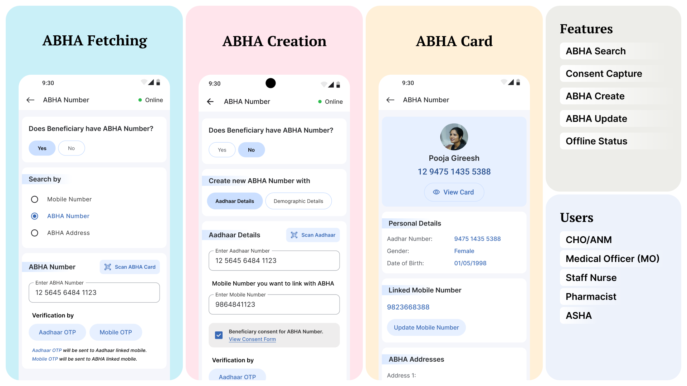

CASE STUDY · CHIP 2.0
ABHA workflows that hold up in the field
A field-ready ABHA flow inside CHIP 2.0 that supports search, verification, creation, and updates
using Aadhaar OTP / Mobile OTP, explicit consent capture, and online/offline paths.
ABHA search + scan
Aadhaar OTP / Mobile OTP
Consent gating
Online + offline flows
*Full deck is in progress. This page captures shipped UX + system decisions.

Scope
What the ABHA module covers
Beneficiary identification
Start by determining whether a beneficiary
already has an ABHA.
Does beneficiary have ABHA?
The first decision splits the flow into lookup (Yes)
or creation (No) to avoid duplicates and wasted verification steps.
- Design intent: make
the entry decision explicit instead of mixing search and creation.
- Enables: faster
routing to the correct path with fewer retries.
- Prevents: accidental
re-creation of ABHA and split records.
Outcome: clearer entry decision and
fewer duplicate attempts.
Search + scan inputs
Lookup supports Mobile Number, ABHA Number, ABHA
Address, and Scan ABHA Card so field teams can work with whatever the beneficiary has.
- Design intent:
reduce dependency on a single identifier in real-world conditions.
- Enables: reliable
retrieval across programs and facilities.
- Prevents: abandoned
verification due to missing/incorrect ID formats.
Result: higher lookup success with
fewer restarts.
Verification + updates
Verification method and post-link maintenance
are treated as governed actions.
Verification by OTP
Users choose Aadhaar OTP or Mobile OTP depending on
what’s available. The UI makes the destination explicit (Aadhaar-linked vs ABHA-linked
mobile).
- Design intent: avoid
silent failures by clarifying where OTP is sent.
- Enables: predictable
verification in mixed connectivity and device contexts.
- Prevents: resend
loops driven by confusion and delayed delivery.
Result: fewer retries and cleaner
verification trails.
Consent + ABHA creation
ABHA creation captures beneficiary consent before
verification. Creation supports Aadhaar Details and Demographic Details, with Online and
Offline paths.
- Design intent: treat
consent as a first-class step, not a buried checkbox.
- Enables: compliant
creation in assisted workflows.
- Prevents: creation
without clear acknowledgement in the moment.
Outcome: governed creation with fewer
disputes and rework.
ABHA address + mobile maintenance
Post-link actions include creating/editing ABHA
Address (with rules + suggestions) and updating the linked mobile number via OTP with
attempt tracking.
- Design intent:
prevent downstream failures by validating formats and limiting attempts.
- Enables: controlled
updates without breaking identity integrity.
- Prevents: invalid
address creation and repeated OTP abuse.
Result: fewer correction tickets and
cleaner records.
Flow
From lookup to verified ABHA
The flow starts with a clear branch: verify an existing ABHA or create a new one. Search inputs, OTP
method, consent, and maintenance actions are handled as predictable states so field teams don’t get
stuck in loops.
Step 01
Decide path
Does beneficiary already have ABHA?
Step 02
Search / scan
Mobile, ABHA number, ABHA address, or scan card.
Step 03
Verify + consent
Aadhaar OTP / Mobile OTP with explicit consent.
Step 04
View + maintain
View card, manage ABHA address, update linked
mobile.
Design decisions
Built to scale ABHA verification at the point of care
These decisions keep ABHA flows reliable under assisted usage, inconsistent identifiers, and weak
networks. I treated identity, consent, and verification as governed states so the UI prevents duplicates
and confusion instead of relying on cleanup later.
1) Branch early: lookup vs create
I made “Does beneficiary have ABHA?” the first step so users don’t mix search and creation. This
reduces duplicate identities and wasted OTP cycles.
- Cleaner flow: the UI matches the beneficiary’s real state
- Fewer duplicates and restarts when an ABHA already exists
2) Support multiple identifiers
Search supports Mobile Number, ABHA Number, ABHA Address, and Scan ABHA Card. Field teams can
proceed even when beneficiaries only have one form of ID.
- Higher lookup success without “come back later” failures
- Less dependency on perfect data entry and memorized formats
3) Make consent and verification
explicit
Consent is surfaced as a visible step, and OTP method clarifies where the code is sent. The UI
treats “waiting” and “retrying” as predictable states.
- Less OTP confusion and fewer resend loops
- Lower risk of assisted actions happening without clarity
4) Treat maintenance as part of the
flow
ABHA Address creation and mobile updates include validation rules, suggestions, resend timers, and
attempt tracking so records stay clean after onboarding.
- Fewer invalid addresses and correction cycles
- Controlled updates without breaking identity continuity
Governance as UX
Identity, verification, and consent are treated as governed states
Instead of treating ABHA as a single “create” action, the UI scopes what’s possible by identity inputs,
verification method, and state (online/offline, attempts remaining). That keeps assisted flows
predictable and reduces data cleanup.
Signal 01
Identifier
Search by Mobile Number, ABHA Number, ABHA Address, or Scan ABHA Card to locate the right record.
Signal 02
Verification method
Aadhaar OTP or Mobile OTP determines where verification happens and how the UI explains delays.
Signal 03
State + consent
Consent, resend timing, attempts remaining, and online/offline mode gate actions and keep the flow
explainable.
Edge cases
Handled the messy stuff on purpose
These are not “rare.” They’re daily behavior in field conditions. Each edge case is handled as a
predictable UI state to reduce retries and support dependency.
*High-frequency failure modes treated as first-class states, not exceptions.
OTP
Delayed OTP / resend loops
Resend timer + explicit messaging reduces panic tapping when OTP delivery is slow. The UI clarifies
whether the OTP is sent to Aadhaar-linked or ABHA-linked mobile.
Constraint addressed: intermittent connectivity + assisted usage. System effect: fewer retries and
cleaner verification trails.
Identity
ABHA already exists
The entry branch and multi-identifier search help confirm an existing ABHA before creation, reducing
duplicate identities and split records across facilities.
Constraint addressed: incomplete identifiers + data integrity. System effect: fewer duplicates and
less reconciliation work.
Address
Invalid ABHA address format
Address creation includes rules (length, allowed special characters) and suggestions so users can
succeed without trial-and-error.
Constraint addressed: strict format requirements. System effect: fewer invalid addresses and fewer
support tickets.
Mode
Offline creation when connectivity
fails
Creation supports demographic details and offline capture so field teams can continue work and
complete verification when connectivity returns.
Constraint addressed: rural networks + continuity of service. System effect: fewer abandoned
sessions and better task completion.
Outcomes
Operational snapshot (example counters from the system)
The UI exposes operational counters so supervisors and field teams can see what happened today without
exporting data. Replace these with your verified program numbers if needed.
Lookup modes
3
Mobile Number, ABHA Number, ABHA Address (plus
scan).
Verification methods
2
Aadhaar OTP and Mobile OTP paths.
Day activity
21 / 18
Linked / Created counters shown in day view.
Optional metrics to add: duplicate registrations prevented, time-to-first-task, punch-in compliance.
Working on the full deck with expanded flows, module coverage, and governance details.